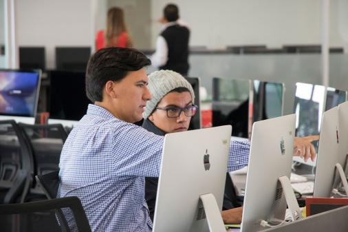
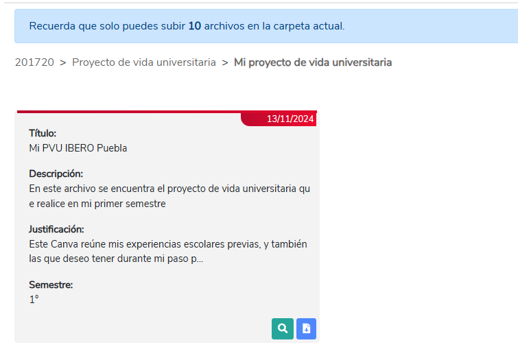

{Concept}
-
El Modeva, o Modelo de Evaluación del Aprendizaje, es una herramienta de la Universidad Iberoamericana de Puebla, la cual nos ayuda a los estudiantes a desarrollar habilidades esenciales para contruirnos como profesionales. Esto es mediante la fomentación de actividades de investigación, participación, crecimiento personal, y actividad física, las cuales nos llevan a construir una mejor versión de nosotros mismos.

{Activities}
-
{Equipos Representativos}
Se abren cada semestre, con su propio horario y opciones. -
{Clases Fitness y gimnasio}
Se ofrecen clases de yoga, zumba, entre otras. Son muy populares. -
{Participación Estudiantil}
Consejos o grupos estudiantiles. -
{Medios universitarios}
Podcast, videos, cosas que le dan voz a los alumnos sobre temas en específico y cosas de interés. -
{Voluntariado}
Actividades de servicio social, solidarias y de ayuda. -
{Orientación Educativa (FOE)}
Espacio donde se escucha y fomenta la salud integral y mental de los universitarios.
{PUV}
- El Proyecto de Vida Universitaria es una herramienta que nos ayuda a planear y organizar nuestras actividades y metas a corto, mediano y largo plazo dentro de la universidad. Nos ayuda a tener una visión más clara de lo que queremos lograr y cómo lo vamos a hacer. Con ella, fuimos capaces de retomar algunas experiencias previas, además de fijar nuevos objetivos para nuestro crecimiento personal y profesional durante el tiempo que estemos en el instituto.
